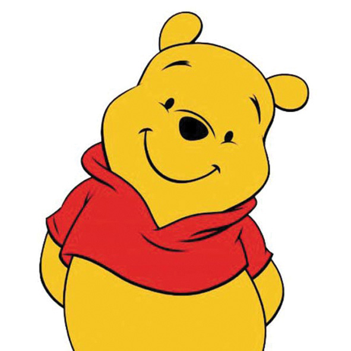

원작 제목이 'Winnie the Pooh' 라는 것에서 알 수 있듯이, 주인공 '푸(Pooh)' 는 친구들 사이에서 부르는 별명이고, 진짜 본명은 위니(Winnie)라고 부른다. 이것은 곰돌이 푸의 품종이 푸 베어(Pooh bear)였던 듯 하다. 즉, "곰돌이 위니"라는 뜻인데, 나중에 하이픈이 추가되어 'Winne-the-Pooh' 가 되었으며, 따라서 정식으로는 풀네임이 통째로 '위니 더 푸' 라고 부르고 줄여서 그냥 '푸'라고 부른다.